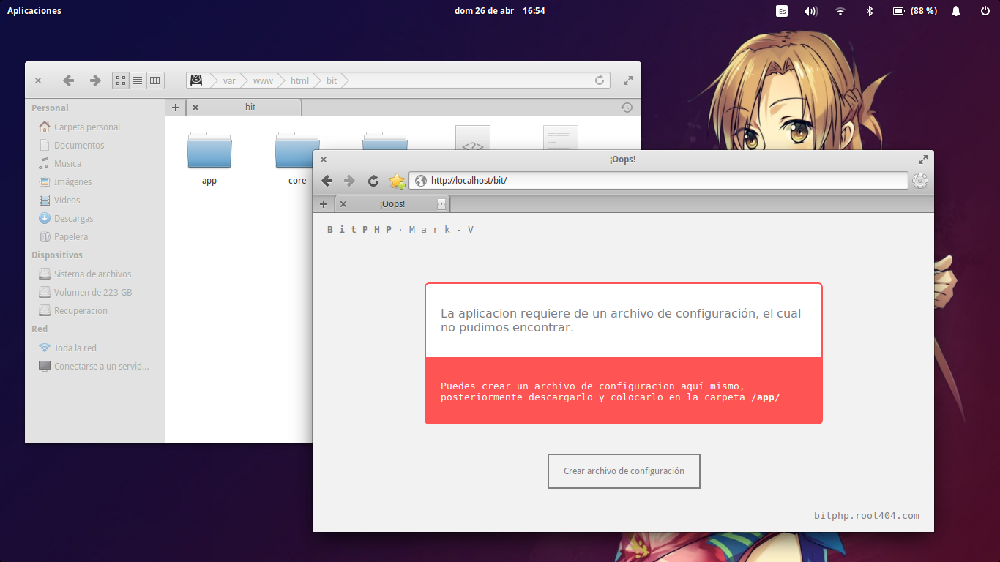
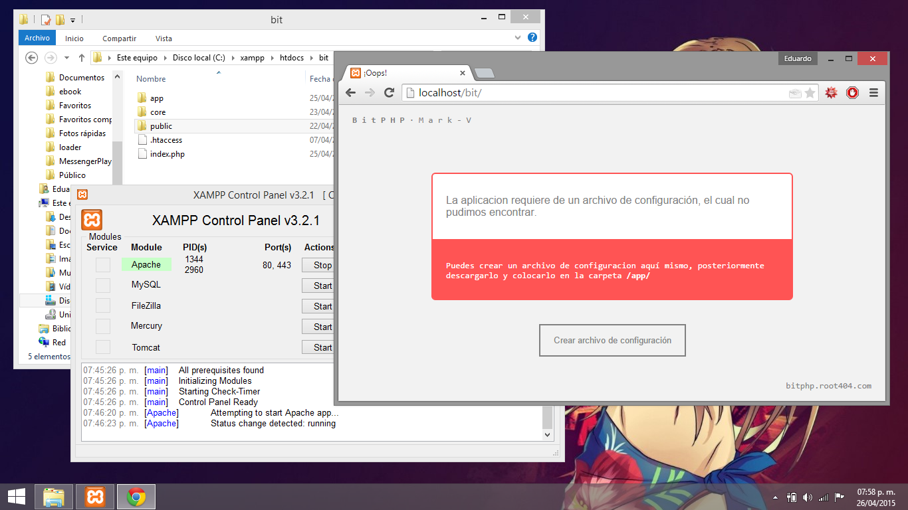
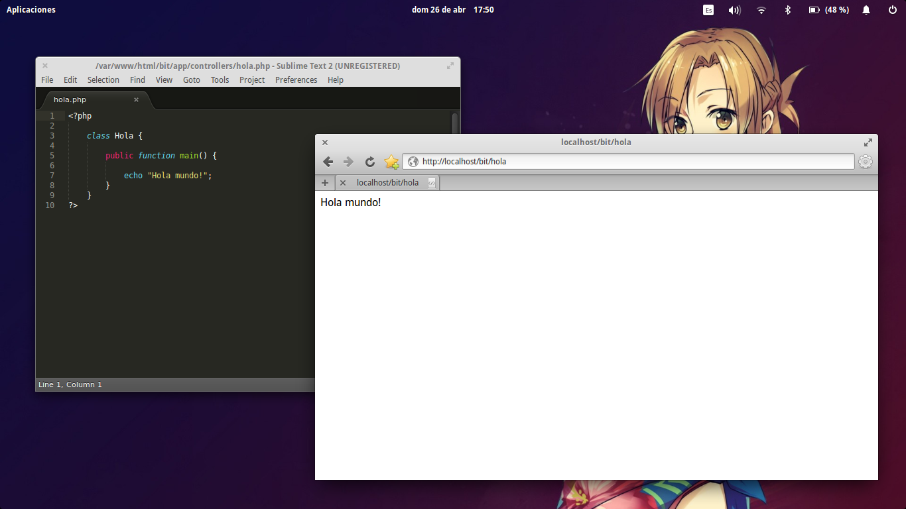
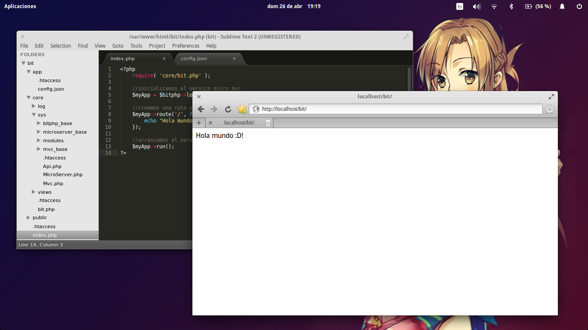

Instalación¶
Ya sea qué trabajes con windows o con alguna distro linux lo primero qué debes hacer es descargar bitphp, para ello puedes visitar la sección de descargas en donde puedes encontrar varias versiones, procura descargar la ultima, también podrás encontrar varias aplicaciones de ejemplo pero esas las veremos más tarde.
Requisitos¶
- Servidor Apache con mod rewrite activado
- PHP versión 5.4 o superior.
- Servidor SQL ( recomendamos MySQL Server )
Puedes leer las Notas de instalación si no conoces o no tienes experiencia instalando/configurando alguno de los requisitos. Una vez qué tengas listos todos los requisitos y hayas descargado bitphp puedes proceder según tu sistema operativo:
Linux¶
Cuando descargues bitphp tendrás en tus manos un comprimido con todos los archivos fuente de bitphp, debemos descomprimir dicho archivo en la carpeta publica del servidor ( en donde se deben poner los archivos html, php, etc. ) dicha carpeta en linux normalmente es /var/www/ o /var/www/html/ en algunos casos.
BitPHP puede trabajar sin problemas en una sub-carpeta, por ejemplo; puedes tener dentro de /var/www/mvc una instancia de bitphp trabajando con mvc y en /var/www/api una instancia de bitphp trabajando con una aplicación restful. Crearemos una carpeta llamda bit dentro de la cual tendrás qué descomprimir los ficheros de bitphp, quedando la estructura de directorios de la siguiente manera:
├── var/
└── www/
└── bit/
├── app/
├── core/
├── public/
├── .htaccess
└── index.php

Ahora si abrimos algún navegador y nos dirigimos a la dirección http://localhost/bit/ podemos apreciar un mensaje de error de bitphp qué nos indica que no se ha encontrado ningún archivo de configuración, pero, a pesar de qué es un error, no es malo, al contrario ¡es señal de que bitphp esta trabajando correctamente!
Fig. 1 Instalación de bitphp en blanco¶
En cuanto a la instalación de bitphp es prácticamente todo, puedes ver el Tutorial 1: Hello world para configurar bitphp según el tipo de aplicación qué quieres desarrollar.
Windows¶
Una vez qué hayas descargado bitphp, dirigete a la carpeta de tu servidor C:/xampp/htdocs/ normalmente en Windows con xampp. Debes crear una carpeta llamada bit en donde vas a descomprimir los archivos de bitphp, con lo que tendrás una estructura de directorios como la siguiente:
├── xampp/
└── htdocs/
└── bit/
├── app/
├── core/
├── public/
├── .htaccess
└── index.php
Ahora si abrimos algún navegador y nos dirigimos a la dirección http://localhost/bit/ podemos apreciar un mensaje de error de bitphp qué nos indica que no se ha encontrado ningún archivo de configuración, pero, a pesar de qué es un error, no es malo, al contrario ¡es señal de que bitphp esta trabajando correctamente!
El archivo de configuración.¶
En una instalación en blanco de bitphp (ver Instalación) al acceder desde el navegador podemos observar un mensaje de error el cual nos dice qué falta el archivo de configuración (ver Fig. 1 Instalación de bitphp en blanco).
Este mensaje aparece ya qué no existe el archivo config.json, pero independientemente de si existe o no, podemos mostrar dicho mensaje para poder crear o modificar los parámetros de configuración de la siguiente manera; Dentro del index.php escribimos lo siguiente:
<?php
require( 'core/bit.php' );
$bitphp->configMaker();
?>
Y al dirigirte a http://localhost/bit ( o la dirección donde se encuentre tu instalación de bitphp ) podrás ver el mensaje de error en dondé puedes crear los archivos de configuración. Para crear un archivo de configuración desde el mensaje de error da click en el botón crear archivo de configuración y se desplegara un formulario el cual nos pide llenar ciertos parámetros:
| Parametro | Descripcion | Necesario para (o soportado): | Valor | ||
|---|---|---|---|---|---|
| MVC/HMVC | RestFUL | Micro MVC | |||
| Ambiente de la aplicación | Determina si la aplicación usará la configuración para un ambiente de desarrollo o un ambiente de producción | SI | SI | SI | develop/production - develop por defecto |
| Activar HMVC | Indica si la aplicación trabaja con MVC o HMVC | SI | NO | NO | true/false - false por defecto |
| Aplicación predeterminda | Podemos decir qué es la aplicación index cuando trabajas con HMVC | SI (HMVC) | NO | NO | <nombre_de_la_app> - null por defecto |
| Controlador predeterminado | Controlador index de la aplicación | SI | NO | NO | <nombre_del_controlador> - home por defecto |
| Acción predeterminada | Acción index del controlador | SI | NO | NO | <nombre_de_la_acción> - main por defecto |
| Modulos auto-cargados | Modulos que se cargarán al controlador automaticamente | SI | NO | NO | Nombres de los mudulos separados por comas - null por defecto |
| Directorio base | Directorio en el cual se encuentra la instalación de bitphp | SI | SI | SI | <directorio> - / (raiz) por defecto |
| Debug (mostrar errores) | Determina si se deben mostrar detalles de los errores de la aplicación | SI | NO | NO | true/false - true por defecto para develop y false por defecto para production |
| Host para la base de datos | Host al qué se va a conectar por defecto la base de datos | SI | SI | SI | <host> - localhost por defecto |
| Usuario para la base de datos | Usuario predeterminado qué será usado para conectar con la base de datos | SI | SI | SI | <user> - root pos detecto |
| Contraseña para la base de datos | Contraseña predeterminada para la base de datos | SI | SI | SI | <pass> - null por defecto |
| Driver para la base de datos | Driver predeterminado para la a la base de datos | SI | SI | SI | <driver> - mysql por por defecto |
| Charset para la base de datos | Charset por defecto para conectar a la base de datos | SI | SI | SI | <charset> - utf8 por defecto |
Pero podrás notar qué algunos parámetros se repiten, esto debido a qué unos son para el entorno de desarrollo y otros para el entrono de producción, tambien notarás que hay un apartado Alias para nombres de bases de datos puedes leer más de ello en Alias para bases de datos.
Quizá deberías ver: Entornos de desarrollo · ¿Qué es el index?
Tutorial 1: Hello world¶
Este tutorial abarca el desarrollo de un simple hola mundo en los diferentes tipos de servicios que se puedes crear con bitphp; MVC/HMVC, Micro MVC y REstFUL, se desarrolla en un entorno con:
- Computador portátil Samsung Core i3, 4Gb RAM
- Sistema Operativo ElementaryOS Freya
- Apache 0.91-ubuntu1
- PHP 5.4
Saltar a:¶
MVC Application¶
Vamos a retomar la instalación que ya tenías (ver Instalación), lo primero qué hay qué hacer es crear el archivo de configuración, para ello vamos a ir al error qué nos arroja bitphp y donde podemos crear el archivo de configuración fácilmente (ver El archivo de configuración.), solo llenamos los siguientes campos:
- Ambiente de la aplicación: develop
- Activar HMVC: false
- Directorio base (para develop): /bit (si es qué tu instalación esta en el sub-directorio bit como la de nosotros)
Todos los demás por ahora los puedes dejar en blanco, ahora solo pulsa en el botón Generar y descargar qué se encuentra en la parte inferior, con esto descargaras un archivo config.json dicho archivo deberás guardarlo en la carpeta /app de tu instalación, de igual manera hay qué crear algunos directorios (controllers/, views/, models/) dentro de la carpeta app/ quedando una estructura de directorios de la siguiente manera:
├── var/
└── www/
└── bit/
├── app/
│ ├── models/
│ ├── views/
│ ├── controllers/
│ ├── .htaccess
│ └── config.json
├── core/
├── public/
├── .htaccess
└── index.php
Por cuestiones de seguridad es importante qué mantengas el archivo .htaccess dentro de la carpeta app/ para evitar qué el usuario (o personas mal intencionadas) tengan acceso a información de la aplicación.
Creando un controlador.¶
Crea un archivo llamado hola.php dentro de la carpeta app/controllers/ con el siguiente contenido:
<?php # app/controllers/hola.php
class Hola {
public function main() {
echo "Hola mundo!";
}
}
?>
Inicializando la aplicación.¶
Para ello debemos ir al archivo index.php e iniciar la aplicación de la siguiente manera:
<?php
require( 'core/bit.php' );
$myApp = $bitphp->loadMvcServer();
$myApp->run();
?>
Probando la aplicación¶
Ahora solo dirígete a http://localhost/bit/hola en cualquier navegador y observa los resultados:
HMVC Application¶
Nuevamente tomando la instalación que ya tenías (ver Instalación) vamos a desarrollar un simple ejemplo de una aplicación HMVC. Primero creamos el archivo de configuración desde el error qué nos arroja bitphp (ver El archivo de configuración.) llenando los siguiente campos:
- Ambiente de la aplicación: develop
- Activar HMVC: true
- Aplicación predeterminada: myApp1
- Directorio base (para develop): /bit (si es qué tu instalación esta en el sub-directorio bit como la de nosotros)
Da click en Generar y descargar y lo guardas en la carpeta app/. Ahora debes crear la estructura de directorios para la aplicación, dentro de la carpeta app/ debes crear un directorio llamado myApp1/ qué a su vez tendrá los directorios controllers/, views/ y models/ con lo cual la estructura de directorios quedara de la siguiente manera:
├── var/
└── www/
└── bit/
├── app/
│ ├── myApp1/
│ │ ├── controllers/
│ │ ├── views/
│ │ └── models/
│ ├── .htaccess
│ └── config.json
├── core/
├── public/
├── .htaccess
└── index.php
Creando el controlador¶
Hay qué crear un controlador para myApp1 para ello crea un archivo llamado hola.php en el directorio app/myApp1/controllers/ con el siguiente contenido:
<?php # app/myApp1/controllers/hola.php
class Hola {
public function main() {
echo "Hola, soy la app1";
}
}
?>
Inicializando el servicio HMVC¶
Exactamente como un servicio MVC debemos ir al archivo index.php e iniciar la aplicación de la siguiente manera:
<?php
require( 'core/bit.php' );
$myApp = $bitphp->loadMvcServer();
$myApp->run();
?>
Probando la aplicación¶
Ahora prueba las siguientes direcciones y observa los resultados.:
Micro MVC Application¶
El crear un hola mundo con un servicio Micro MVC de bitphp es aún mas fácil, retomando nueva mente la instalación que ya debes tener (ver Instalación) creamos un archivo de configuración (ver El archivo de configuración.) y lo guardamos en la carpeta app/, llenas solamente los siguientes campos:
- Ambiente de la aplicación: develop
- Directorio base (para develop): /bit (si es qué tu instalación esta en el sub-directorio bit como la de nosotros)
Ahora hay qué editar el archivo index.php con el siguiente contenido:
<?php
require( 'core/bit.php' );
//inicializamos el servico micro mvc
$myApp = $bitphp->loadMicroServer();
//creamos una ruta para la raiz
$myApp->route('/', function() use ( $myApp ){
echo "Hola mundo :D!";
});
//arrancamos el servicio de micro-serving
$myApp->run();
?>
Hecho esto, si te diriges a tu navegador a la dirección http://localhost/bit/ podrás ver los resultados:
RESTful Application¶
El hacer un hola mundo con el servicio de RESTful de bitphp es igual de fácil, para crear el archivo de configuración es igual que en la aplicación micro mvc la diferencia radica en el index.php el cual debe tener lo siguiente:
<?php
require( 'core/bit.php' );
//inicializamos el servico restful
$myApp = $bitphp->loadApiServer();
//creamos una ruta get para la raiz
$myApp->get('/', function() use ( $myApp ){
$myApp->response([
'status' => $myApp->getStatusMessage()
, 'result' => 'Hello world :D'
]);
});
//arrancamos el servicio restful
$myApp->start();
?>
Ahora si te diriges a la dirreción http://localhost/bit/ podrás ver el resultado: